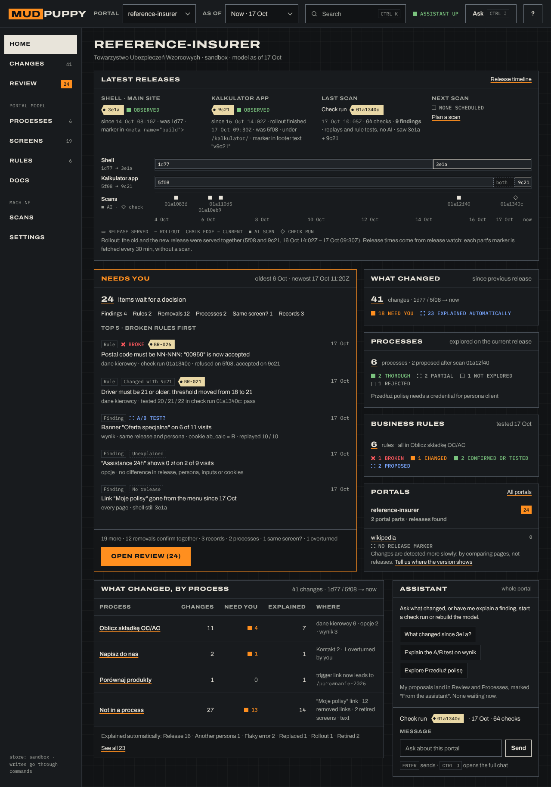
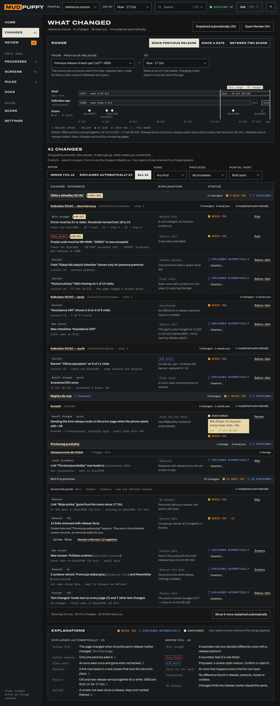
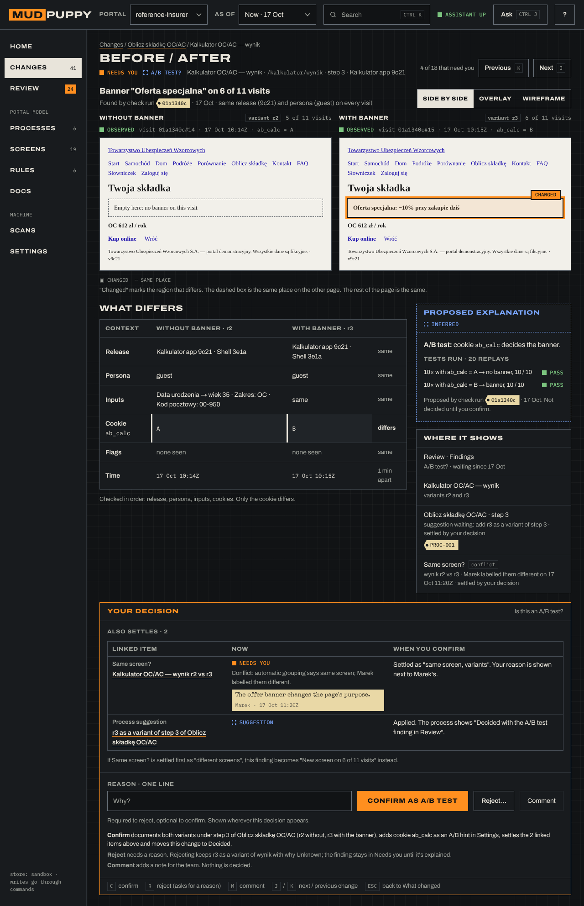
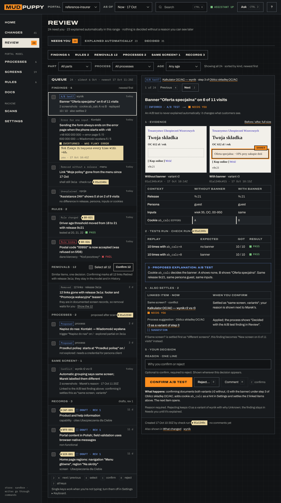
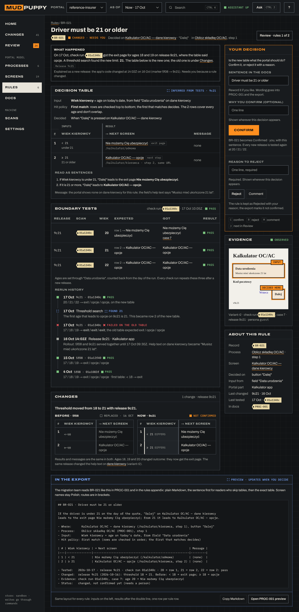
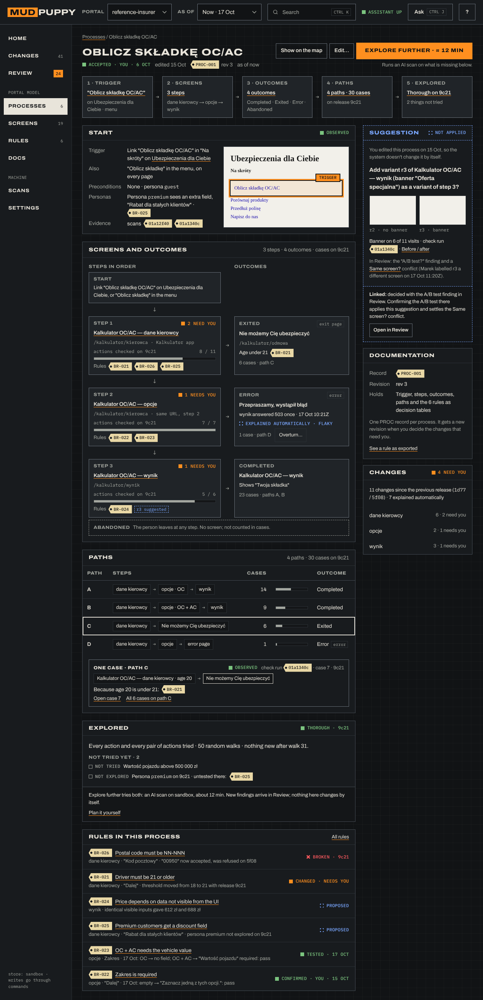

How 2.0 works
Where things live
Look and decide
Portal model
Machine
Time: As of and From
Shellmeta build
1d773e1a
Kalkulator appfooter v…
5f08both9c21
Scans
01a1083f01a110d501a12f4001a1340c
4 Oct11 Oct17 Oct · now
As of (header, every page)Now · a release · a scan. Screens, Map, Processes and Rules show the model as it was; a banner says so and offers Back to now. Writes wait until you're back at Now.
From (Changes only)Previous release of each part (default) · a date · a scan. Changes lists what differs from From to As of. The range shows as a bracket on this timeline.
After every scan
Scan or check runAI scan explores; check run replays and tests (no AI).Observed
Model updatedScreens keep their identity; splits and merges get a reason.
Changes foundNew, removed, leads elsewhere, result changed, rule broke.
Explained automaticallyNew release · another persona · flaky error · rollout · replaced.23
Needs youA/B test? error for one input, removed without a release, rule changed, unexplained.18
You decideConfirm · Reject (reason) · Overturn (reason). The reason travels with the item.
The review loop
Work through the queue
- 1 · Filter by kind (counts on each)/
- 2 · Groups first: "12 links removed with 3e1a"X · Shift C
- 3 · Next item, read the evidence and the testsJ / K
- 4 · Confirm, or reject with a one-line reasonC · R
- 5 · Undo if it was wrongU
Where your reason shows
Changes · the screen's variants · the map inspector · the process · the rule · the export · Review ▸ Decided.
ConfirmedNew threshold matches the 9c21 release notes.you · 17 Oct 11:02ZOverturning an automatic explanation
Explained automatically"Kontakt: error page" → Flaky error (rechecked once, passed).Inferred
OverturnWhat it is instead + a required reason.Not flaky: it happens every time with +48.you · 17 Oct 10:41Z
Back in Needs youThe system tests your explanation: "+48 → error 5/5; without → sent 5/5".Overturned
DecidedConfirmed as "error for one input". Later scans keep it; new contrary evidence becomes a new finding, never a silent flip.Confirmed
Words on screen
| Internal | On screen | Example |
|---|---|---|
| abstract state | screen | Kalkulator OC/AC — dane kierowcy · Active |
| screen variant | variant + why | r3 · Persona premium |
| transition | link (states: Active, Not seen since, Not checked on, Retired, Replaced) | Not seen since 17 Oct |
| in-screen transition | action | 6 actions inside |
| deviation | change | New action · Assistance 24h |
| claim, hypothesis | finding + explanation | Banner on 6 of 11 visits · A/B test? |
| build epoch | release (per portal part) | Release 9c21 · Kalkulator app |
| journey | path | dane kierowcy → opcje → wynik |
| case | case | Case 7 · age 20 |
A BA's session after a release

1 · HomeKalkulator 9c21 is out: 41 changes, 24 need you.

2 · What changedGrouped by process; 23 explained automatically.

3 · Before / afterThe banner: an A/B test on cookie ab_calc.

4 · ReviewConfirm 12 removals at once, then the findings.

5 · BR-021Threshold 18 → 21: tested at 20, 21, 22. Confirm.

6 · ProcessExplored thorough on 9c21; explore premium next.